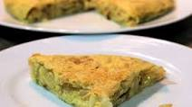

Ingredientes
- 2 huevos
- Aceite de oliva
- perejil, cebolla
- sal, pimienta
Elaboracion (Pasos)
- Picar la ceboola en juliana y vertir aceite en un sarten
- Añadir la cebolla, sal y pimienta al gusto, durante 15 min.
- Una vez pochada se saca y se coloca en un bol
- Cuando el horno este caliente, introducir el pollo
- Batir los huevos
- Colocar la mezcla al sarten dejar que se cocine